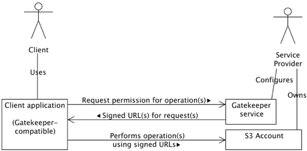

Gatekeeper Concepts
A Gatekeeper service acts as an intermediary between a Client and an S3 Account, on behalf of a Service Provider who owns the S3 Account. The Service Provider configures the gatekeeper service to perform one or more of the following tasks:
- Allow clients to interact with S3 by providing the client with signed URLs
- Authorize or deny access to particular clients, based on some kind of access control rules
- Control how data is stored in S3, such as by choosing which bucket to store objects in or by re-naming objects to match an organizational structure imposed by the service provider
Gatekeeper services authorizes client operations using the S3 Query String Authorization URL signing mechanism to generate time-limited URLs that client applications use to Upload, Download, and Delete objects in S3.
Interaction

Client request message
A client application contacts the Gatekeeper service when it wishes to perform an operation on objects in the S3 account. There operations can include:
- PUT: The client will upload a file or some data to S3
- GET: The client will retrieve an object from S3
- HEAD: The client will retrieve information about an object from S3 (this is not likely to be used often)
- DELETE: The client will delete an object in S3
The client application includes a separate "request" for each operation it wishes to perform.
Gatekeeper response message
The Gatekeeper service evaluates the client's request(s) and responds with a signed URL for each operation it will allow, or without a signed URL for operations it will not allow along with a brief explanation of the reason.
The evaluation the Gatekeeper service performs can vary considerably - from allowing every operation, to restricting operations to authorized clients, through to manipulating the name, location and metadata of objects. If the service is renaming objects or changing metadata, the response message may include information about this changes if it is necessary for the client application to react appropriately. For example, if the Gateway service requires the Content-Type of a client's file upload to be changed the client application must be made aware of this change to perform an upload that will match the signed URL returned by the Gateway.
Client performs operations
Once the client application has received a response message from the Gatekeeper service, it can perform the operations for which the service provided signed URLs.
As mentioned above, if the Gatekeeper service applied certain kinds of changes the client application will have to recognise additional information in the Gatekeeper's response message and react appropriately.
Gatekeeper Messages
To capture the information necessary to perform the interactions described above a flexible message format is required. The message format must provide means for the client to provide information to the Gatekeeper describing the operations it intends to perform, and for the Gatekeeper to respond with allowed and/or denied operations as well as any object changes it expects the client to make before performing the operations. Finally, in more advanced interaction scenarios the Gatekeeper or Client application might need to capture additional application-specific information in the message, such as transaction ID unique to that interaction. So the message format must be able to represent client requests ranging from the simple to the complex, and it ideally it should also be compatible with a wide range of server-side technologies.
The Gatekeeper Message format meets these requirements by building messages based around a series of properties (name/value pairs) where the name of each property is organised into a hierarchy. The message captures three kinds of message properties:
- Request properties: Properties describing the operation a client wishes to perform, particularly the type of operation and the S3 object the operation will be performed on. There is a set of request properties for each S3 object the client wishes to operate on, with each set identified using a simple numbered id which starts at 0 for the first object, is 1 for the second object etc.
- Message properties: Properties concerning the gatekeeper message as a whole, such as a unique identifier the Gatekeeper may set for each message it processes
- Application properties: Properties specific to the client application sending the message. These may be used to include additional information from or to the client.
Gatekeeper Message Format
| Request properties | |
|---|---|
| request|id|signatureType | The type of operation the client wishes to perform on an object, one of: put, get, head, delete |
| request|id|objectKey | The object's key |
| request|id|bucketName | The name of the bucket where the object will be stored |
| request|id|metadata|name | The object's metadata, such as Content-Length and
Content-Type.
Each metadata item will have a corresponding property with a matching name |
| request|id|signedUrl | A signed URL provided by the Gatekeeper service
when a requested operation is allowed
Gatekeeper response only |
| request|id|declineReason | An explanation as to why a requested operation was
disallowed.
If this property is present in a Gatekeeper response there will be no corresponding signedUrl property. Gatekeeper response only |
| Message properties | |
| message|name | Any property specific to a request/response
message.
The JetS3t Gateway servlet uses a message property to include a message-specific transaction id, eg message|transactionId=1234 |
| Application properties | |
| application|name | Any property specific to a client application.
For example, a client application may prompt a user for a password or some other information that an advanced Gatekeeper service will use to decide whether or not to allow an operation. |
Message Usage
The Gatekeeper request message is intended to be a standard HTTP POST requests, where each property in the message is sent as a POST parameter. The Gatekeeper response should be a plain text document, where each property is on a separate line and is represented as propertyName=propertyValue.
Gatekeeper Authorization and Control
The level of control a Gatekeeper service imposes over S3 operations can vary from none, where the service allows any client to perform operations, through to the high degree of control imposed when the service renames objects and adds or changes object metadata. This section discusses a few different ways that Gatekeeper control could be implemented, though the exact level of control required will depend entirely on the kind of service or application a Service Provider is offering.
Basic authorization
The simplest form of client authorization would be to use the standard web-server mechanism of Basic Authorization, where a client must provider a valid username and password before they can even submit a request to the Gatekeeper service. With this mechanism the Gatekeeper service could be extremely simple and allow all operations requested by clients, knowing that the Basic Authorization requirement will prevent any unauthorized clients from reaching it.
End-point authorization
When clients submit HTTP POST requests over the Internet certain information about that client will be available to any server-side service. This information can include the client's IP or DNS address, the User Agent description provided by the client's application, and even the client's authorized username if Basic Authorization is turned on.
Gatekeeper services could use the client's end-point information to control authorization, such as by only authorizing clients with a specific end-point IP addresses or clients in a particular address range (eg the computers in a business' network).
Object-specific authorization
As the client must provide information about which objects it wishes to operate upon to receive the appropriate signed URL, the Gatekeeper service can use this information to decide whether or not to allow particular clients or even particular operations in a client's request. The simplest example of this is the Content-Type object metadata item, which clients must include in their requests for PUT URLs before they can upload objects to S3. If the Service Provider wished to limit the type of files uploaded to S3, they could dis-allow any PUT operation where the Content-Type was not allowed.
This technique relies on the client providing the necessary information for the Gatekeeper to make a decision. In some cases information must be provided by the client for certain operations (such as with the Content-Type for PUTs) so the Gatekeeper can count on having this information available. In other cases the obejct information available will depend entirely on what metadata the client application applies to objects, and how much of that information it includes in requests to the Gatekeeper.
In the worst case, the Gatekeeper could simply deny access to any client application which did not provide the necessary information.
Application-specific authorization
The most sophisticated authorization control can be imposed when a client application is designed to include application-specific information in its request messages. This information could be anything at all that is appropriate for the kind of service the Service Provider is offering. For example, the client application itself could prompt for username and password details which are encrypted before being sent to the Gatekeper - this would be an improvement on standard Basic Authorization as passwords would not be sent in easily readable plain-text.
The possibilities of this approach are basically unlimited, as long as the Service Provider has control over both the Gatekeeper service and the client's application.
Controlling Objects
A Gatekeeper service can have a reasonable degree of control over the operations performed on objects in an S3 account. In addition to authorizing which clients can perform operations, and even which particular operations a client can perform, the service can control the name, location and metadata of objects a client operates on.
This last level of control is possible due to the way signed URLs work. When a Gatekeeper service provides a client with a signed URL, that URL may or may not reference the object the client actually requested. The client application doesn't care about this, as long as the signed URL works for performing the requested operation the content of the URL is not important (though the client application may have to be aware of some changes in the case of PUT URLs).
For example, consider a client application that uploads
and downloads files in an S3 account. This application
doesn't know much about the S3 service or how it works, all
it knows is that it receives URLs from the Gatekeeper to do
its work.
Let's say the client wants to upload the file MyMovie.avi
to S3. The client application requests a PUT URL with the
following very simple request message:
request|0|signatureType=put request|0|objectKey=MyMovie.avi
Notice that there is no request.0.bucketName property, nor a request.0.metadata.content-type property. The client application only knows to provide the file's name.
The Gatekeeper service now has the job of deciding where this object should be stored. Because the client has been authorized using some mechanism (such as Basic Authorization) the service knows that the client is the user Mr Tickle. The service decides that files from this user belong in the Mr Men bucket in S3, and that the object key should be prefixed with a "directory" name specifically for Mr Tickle. Finally, the service recognises that the .avi file is a movie with the mime type video/x-msvideo.
The Gatekeeper service replies with the following response message (signedUrl is all one line):
request|0|signatureType=put
request|0|objectKey=MrTickle/MyMovie.avi
request|0|bucketName=MrMen
request|0|metadata|content-type=video/x-msvideo
request|0|signedUrl=http://s3.amazonaws.com/MrMen/MrTickle/MyMovie.avi
?AWSAccessKeyId=1FMFX9QNQHMZ32MPA7G2
&Expires=1168240995
&Signature=L%2BZLrgKNbjuOstt2SoTwxTGyaDE%3D
The first three request properties, objectKey and bucketName, are returned as a courtesy and the client application can ignore them. The important item is the signedUrl, which is a signed PUT request for uploading a file to the bucket MrMen with the object key MrTickle/MyMovie.avi. When the client application uses this URL in a PUT operation with the file data, the file will be uploaded to the location the Gatekeeper service specified.
Warning: One important thing to note in this case is that because the Gatekeeper changed the Content-Type metadata item, the client application must also use the same Content-Type HTTP header when performing the PUT operation. As Content-Type HTTP header is among a small set of headers that are always included in a signed PUT URL, the client application must send the same value when communicating with S3. The following metadata items must match between the signed URL and the HTTP PUT headers:
- Content-Type
- Content-MD5
- Any S3-specific metadata item prefixed with x-amz